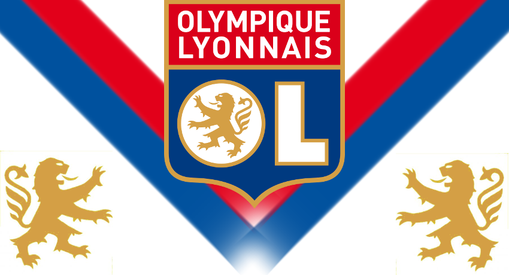
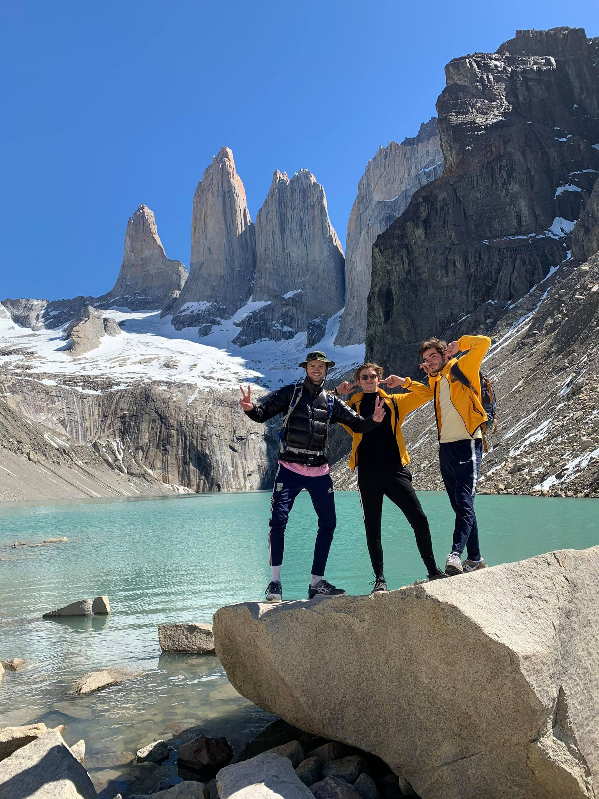
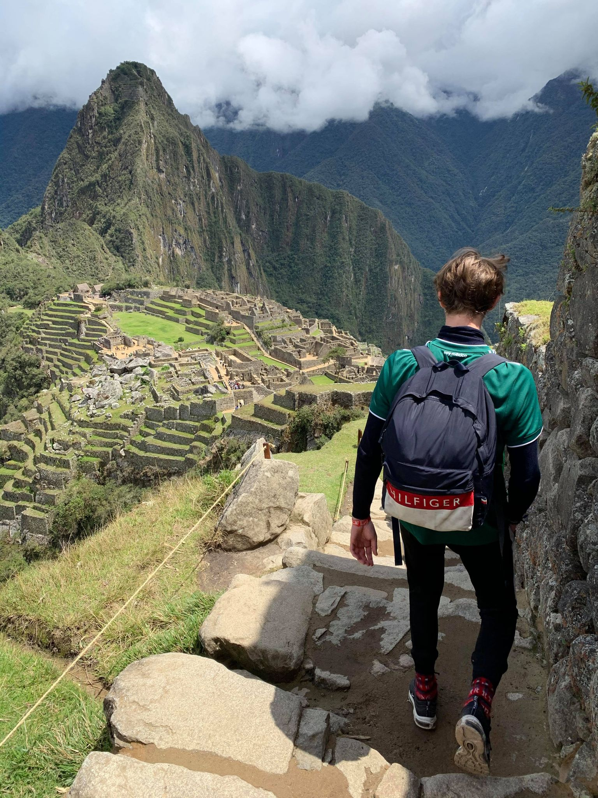

🤠 Welcome, I am Vincent 🤠

I am a 4th year student at Ieseg School Of Management in Marketing Digital Master. I am passionate about several sports and travelling.
Take a look on my Linkedin profile 👨🎓My Hobbies
Football ⚽
Football is the sport I've been following since I was very young, notably because I'm a big fan of the club of : l'Olympique Lyonnais.
Basketball 🏀
Basketball and more specifically the NBA is a much newer passion. I don't have a heart club but I like to follow all the games and follow the careers of some great players.

Travelling ✈️
I love travelling, discovering new cultures and unusual places. My last trip was to South America where I discovered Macchu Pichu in Peru and Patagonia in Argentina and Chile. The two pictures below represent the trip : one is the macchu Picchu in Peru while the other one show two close friends and myself in front of a famous place n patagonia : Torres Del Paine, en Chile.
 Profesional experiences
I was a salesperson at Go Sport in the summer of 2018 for two months : it was my first real professional experience. I was able to discover the underside of customer relations around a world event directly related to my passion: the 2018 Football World Cup.

I have been a member of the Event team on Coca Cola stand at Solidays Festival 2018. I was in charge of the animation of the stand for the whole duration of the festival over three days with five friends, welcoming more than 220,000 festival-goers.
I was able to develop my interpersonal skills at Lacoste in the Champs Elysées boutique in the summer of 2019 during a world sports event: Roland Garros. For two months, I had precise sales objectives while welcoming an international clientele with whom I was able to speak English and Spanish.

For 10 weeks I was a customer advisor for the Zadig&Voltaire and agnès b. brands in the company Approche Sur Mesure. During the internship, I was able to develop my customer knowledge through calls and mailings. I also learnt to use several profesionals software such as crm ones.